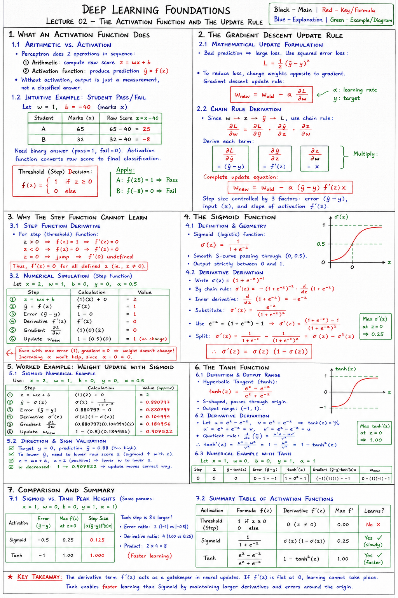

Short Notes & Visual Summary
Handwritten / quick summary notes for Lecture 02:

Click image to open high-resolution version in new tab
What an Activation Function Does
1.1 Arithmetic vs. Activation
A single perceptron operates by carrying out two operations in sequence:
- Arithmetic: Computes the linear combination of inputs, weights, and bias to yield a raw value z = wx + b.
- Activation Function: Evaluates the raw score z through an activation function f to produce the final prediction ŷ = f(z).
Without the activation function, the output remains a simple measurement rather than a classified answer.
1.2 Intuitive Example: Student Pass/Fail
Suppose a perceptron determines whether a student passes a course based on marks obtained x. Let weight w = 1 and bias b = -40:
- Student A (x = 65): raw score z = (1)(65) - 40 = 25
- Student B (x = 32): raw score z = (1)(32) - 40 = -8
Since the question is binary (pass or fail), we require an answer of 1 or 0. The raw scores 25 and -8 do not directly represent this. The activation function converts these scores into the final binary classification:
f(z) = 1 if z ≥ 0 else 0
Applying this threshold function:
- Student A: f(25) = 1 ⇒ Pass
- Student B: f(-8) = 0 ⇒ Fail
The Gradient Descent Update Rule
2.1 Mathematical Update Formulation
A bad prediction is represented by a large loss value. We define the squared error loss function as:
L = ½ (ŷ - y)2
Where y is the target and α is the learning rate. To reduce loss, we must change weights in the direction opposite to the gradient ∂L/∂w, leading to the **gradient descent update rule**:
wnew = wold - α ∂L/∂w
2.2 Chain Rule Derivation
Since the weight w affects z, z affects ŷ, and ŷ affects L, we apply the chain rule to expand the gradient:
∂L/∂w = (∂L/∂ŷ) · (∂ŷ/∂z) · (∂z/∂w)
Deriving each term individually:
- ∂L/∂ŷ: Derivative of ½(ŷ - y)2 with respect to ŷ ⇒ (ŷ - y)
- ∂ŷ/∂z: Derivative of f(z) ⇒ f'(z)
- ∂z/∂w: Derivative of wx + b with respect to w ⇒ x
Multiplying these factors yields the expanded gradient:
wnew = wold - α (ŷ - y) f'(z) x
Three distinct factors control the size of the step: the error (ŷ - y), the input (x), and the derivative of the activation function (f'(z)).
Why the Step Function Cannot Learn
3.1 Step Function Derivative
For the step (threshold) function, the outputs are constant values (0 or 1) except at the boundary point:
- For z > 0, f(z) = 1 ⇒ f'(z) = 0
- For z < 0, f(z) = 0 ⇒ f'(z) = 0
- At z = 0, the function jumps, making the derivative f'(0) undefined.
Thus, f'(z) = 0 for all defined inputs (z ≠ 0).
3.2 Numerical Simulation
Let's run a test with parameters: x = 2, w = 1, b = 0, target y = 0, and learning rate α = 0.5.
- Weighted sum: z = (1)(2) + 0 = 2
- Prediction: ŷ = f(2) = 1 (since 2 ≥ 0)
- Error: ŷ - y = 1 - 0 = 1 (maximum possible error)
- Derivative: f'(2) = 0
- Gradient: ∂L/∂w = (1)(0)(2) = 0
- Update: wnew = 1 - (0.5)(0) = 1 (no change)
Even though the error was at its maximum value of 1, the weight did not change. The derivative being 0 multiplies the error away, preventing it from updating the weight. Increasing the learning rate α changes nothing since α · 0 remains 0.
The Sigmoid Function
4.1 Definition and Geometry
To enable learning, we need a smooth activation function that has a non-zero derivative everywhere. The **Sigmoid function** is defined as:
σ(z) = 1 / (1 + e-z)
It generates a smooth S-curve passing through (0, 0.5), bounding output values strictly between 0 and 1.
4.2 Derivative Derivation
Let's derive σ'(z) step-by-step using the chain and quotient rules:
- Write σ(z) as (1 + e-z)-1.
- By the chain rule: σ'(z) = -(1 + e-z)-2 · d/dz(1 + e-z)
- Evaluate the inner derivative: d/dz(1 + e-z) = -e-z
- Substitute and simplify: σ'(z) = e-z / (1 + e-z)2
- Rewrite the numerator using e-z = (1 + e-z) - 1:
σ'(z) = [(1 + e-z) - 1] / (1 + e-z)2
- Split into two fractions: σ'(z) = [1 / (1 + e-z)] - [1 / (1 + e-z)2]
- Rewrite terms using powers of σ(z): σ'(z) = σ(z) - σ2(z)
σ'(z) = σ(z) (1 - σ(z))
Worked Example: Weight Update with Sigmoid
5.1 Sigmoid Numerical Example
Let's run the same parameters as Part 3 (x = 2, w = 1, b = 0, target y = 0, α = 0.5), changing only the activation function to Sigmoid:
- Weighted sum: z = wx + b = (1)(2) + 0 = 2
- Activation: ŷ = σ(2) = 1 / (1 + e-2) ≈ 0.880797
- Error: ŷ - y = 0.880797 - 0 = 0.880797
- Derivative: σ'(2) = σ(2)(1 - σ(2)) = (0.880797)(0.119203) ≈ 0.104994
- Gradient: ∂L/∂w = (ŷ - y) σ'(z) x = (0.880797)(0.104994)(2) ≈ 0.184956
- Update: wnew = wold - α ∂L/∂w = 1 - (0.5)(0.184956) = 0.907522
5.2 Direction and Sign Validation
Let's perform a sanity check on the update direction:
- The target is y = 0, and our prediction is ŷ = 0.88 (too high).
- To lower ŷ, we must lower the raw score z (since sigmoid increases monotonically with z).
- Since z = wx + b and input x = 2 (positive), we must lower w to lower z.
- The weight decreased from 1 to 0.907522, confirming the mathematical update moves the correct way.
The Tanh Function
6.1 Definition and Output Range
The **Hyperbolic Tangent (Tanh)** function is another S-shaped curve, but it maps values to a symmetric range between -1 and 1, passing through the origin:
tanh(z) = (ez - e-z) / (ez + e-z)
6.2 Derivative Derivation
Let u = ez - e-z and v = ez + e-z, so tanh(z) = u / v:
- Differentiate numerator and denominator: u' = ez + e-z = v, and v' = ez - e-z = u.
- Apply the quotient rule: d/dz(u/v) = (u'v - uv') / v2.
- Substitute variables: tanh'(z) = (v2 - u2) / v2.
- Split the fraction: tanh'(z) = 1 - (u2 / v2).
tanh'(z) = 1 - tanh2(z)
At z = 0, tanh(0) = 0, yielding a peak derivative height of 1.00.
6.3 Numerical Example with Tanh
Let's run a comparative numerical test: x = 1, w = 0, b = 0, target y = 1, and α = 1.
- Weighted sum: z = (0)(1) + 0 = 0
- Activation: ŷ = tanh(0) = 0
- Error: ŷ - y = 0 - 1 = -1
- Derivative: tanh'(0) = 1 - 02 = 1
- Gradient: ∂L/∂w = (-1)(1)(1) = -1
- Update: wnew = 0 - (1)(-1) = 1
Comparison and Summary
7.1 Sigmoid vs. Tanh Peak Heights
Let's compare the performance of Sigmoid vs. Tanh under identical parameters (x = 1, w = 0, b = 0, y = 1, α = 1):
- Sigmoid step size: 0.125
- Tanh step size: 1.000
The Tanh step is exactly 8 times larger than the Sigmoid step. This is driven by two factors:
- Error ratio: Tanh outputs -1 to 1, doubling the error magnitude (ratio of 2).
- Derivative ratio: Tanh's peak derivative is 1.00 compared to Sigmoid's 0.25 (ratio of 4).
- Product of ratios: 2 × 4 = 8.
7.2 Summary Table of Activation Functions
| Activation | Formula f(z) | Derivative f'(z) | Max f' | Learns? |
|---|---|---|---|---|
| Threshold | 1 if z ≥ 0 else 0 | 0 (z ≠ 0) | 0.00 | No |
| Sigmoid | 1 / (1 + e-z) | σ(z)(1 - σ(z)) | 0.25 | Yes (slowly) |
| Tanh | (ez - e-z) / (ez + e-z) | 1 - tanh2(z) | 1.00 | Yes (faster) |
The derivative term f'(z) acts as a gatekeeper in neural updates. If f'(z) is flat at 0, learning cannot take place. Tanh enables faster learning than Sigmoid by maintaining larger derivatives and errors around the origin.
Original PDF Notes
Below is the original PDF document for your reference: